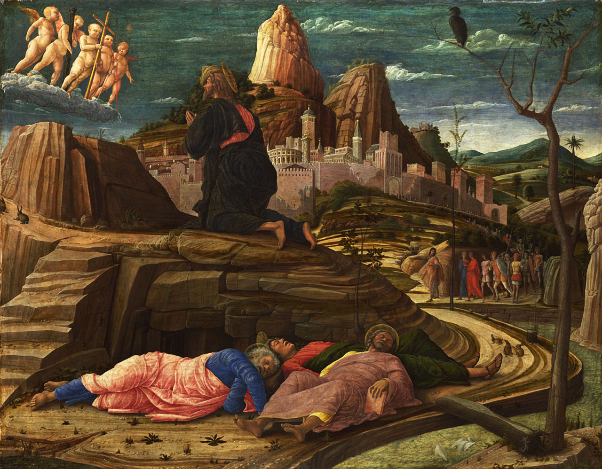
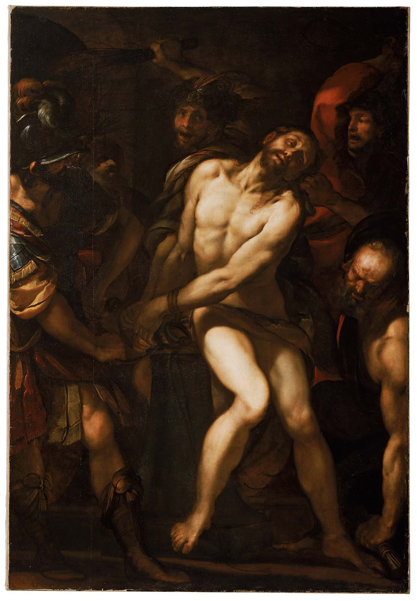
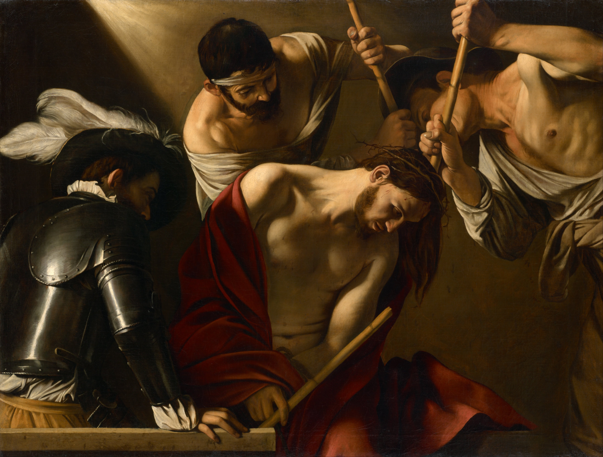
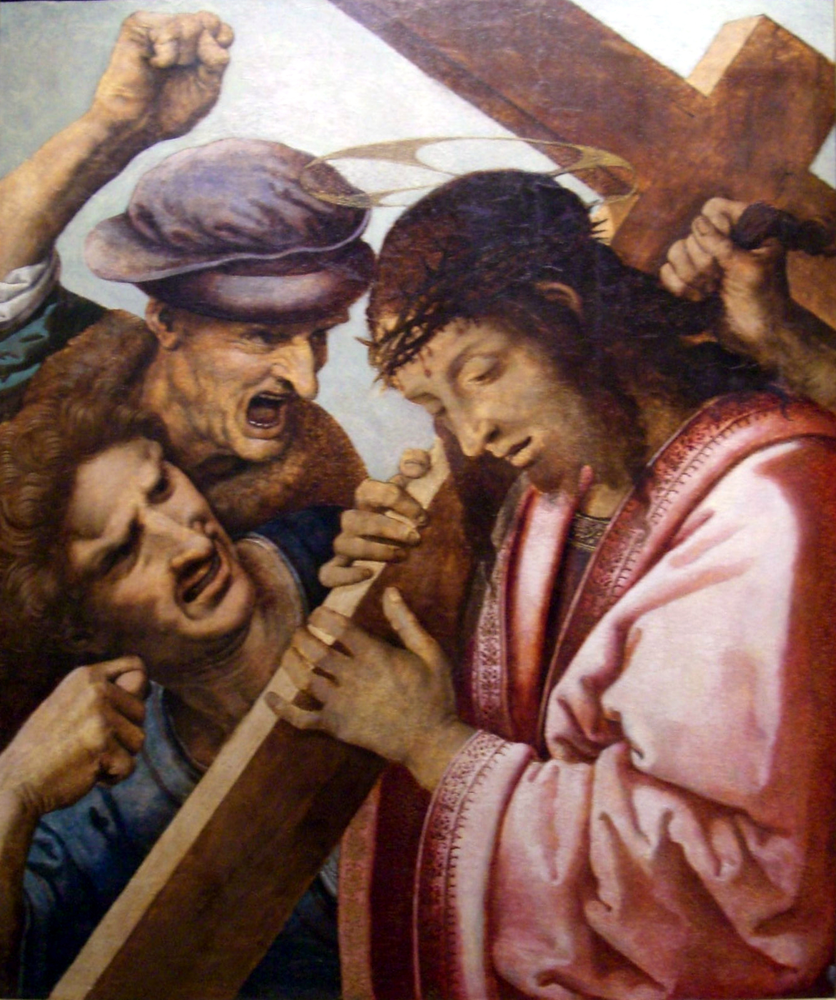
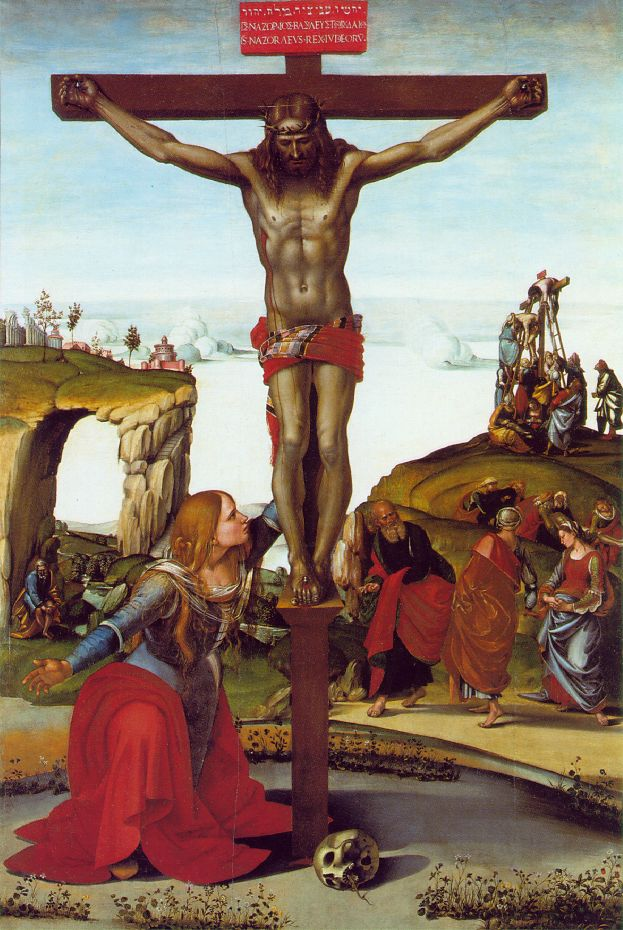

1. The Agony In The Garden

And his sweat became as drops of blood running down upon the ground.
And rising from prayer he came to the disciples, and found them sleeping. (Luke 22, 44-45).
2. The Scourging At The Pillar

Pilate then took Jesus and had him scourged. (John 19,1)
3. Crowning With Thorns

And they stripped him and put on him a scarlet cloak; and plaiting a crown of thorns,
they put it on his head, and a reed in his right hand. (Matthew 27, 28-29)
4. Carrying Of The Cross

And bearing the cross for himself,
he went forth to the place called the Skull, in Hebrew, Golgotha. (John 19, 17)
5. The Crucifixion

And Jesus cried out with a loud voice and said,
"Father, into your hands I commend my spirit." (Luke 23, 46)